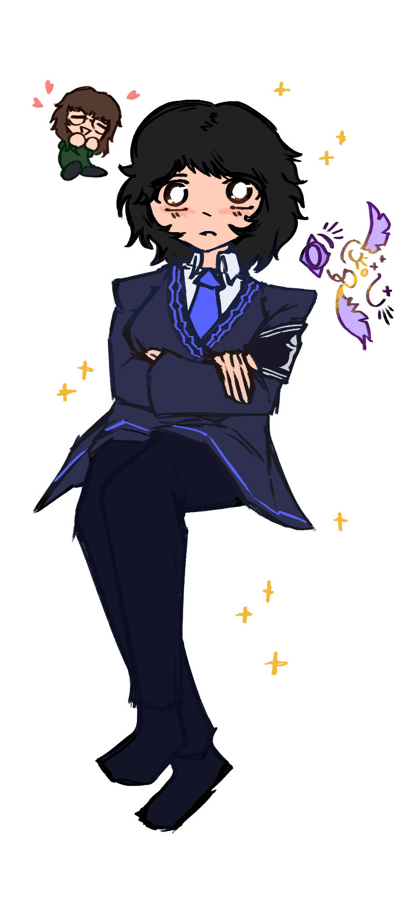

Converging Lives: two lives travel parallel, in tow. to live with another, to undestand them. to be their other half. to be unable to imagine a world—a life—without them. what a mystifying feeling that can not be put into words. too much to express and not enough time. convergence brings resentment, affection, and an appreciation for vyskaran girls.

thank you for living in tow with me, kevin.
it must hardly feel nessacary to recieve thanks for being someone else's siblings. yet at the same time, knowing myself, i will likely be too bashful to be here with you when you do read this. it's silly, especially considering how much i preach honesty and transparency.
what can be said at this point? having known you for over 20 years, our history blends, merges, and blurs into a feeling which can only be captured in cliche, empty words like "brotherhood." many days of my life i've enjoyed your company, and few days of my life i've loathed you. is that just how this is? i think so. still though, i couldn't imagine living this life without you. without someone who eagerly wants to show me his writing, someone who gets excited from a lousy anime girl i've doodled on a piece of paper, someone who grounds my existence. it feels futile to try to capture it all in a few meager words, so: thank you for everything.
the future is terrifying. i don't know what's going to happen when we grow up. but all i know is this: i want to give our mother a relaxing future. a future where she doesn't have to work so hard. she's worked really hard for her entire life, i think. i would like to be the support structure she's needed, and i think you probably feel the same way. she deserves a break, and more than anything, that's what i want for her. let's try our best, okay?
there's this strange barrier. the inability to say this. maybe that's what happens between siblings? not that this is a bad thing, but simply, i feel like these feelings could only be expressed through written words. this appreciation and love i have for you. it's hypocritical of me, yet oddly fitting i think.
maybe i'll get used to it. or maybe not. happy thanksgiving, and happy belated birthday.
from, stephen